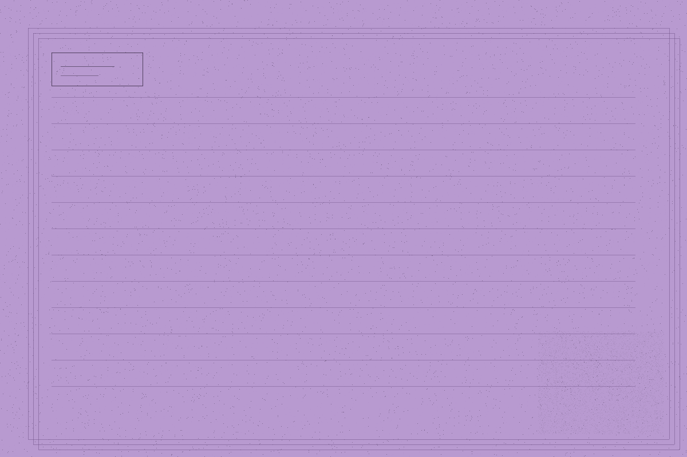

下面三只抽屉，是按"你想干什么"分的，不是按花材分的。大多数人一进来就想找"玫瑰"或者"向日葵"，但真正要先定的是用途——同样一束白，放在婚礼签到处和放在病房里，是两种完全不同的做法。
送人：生日、纪念日、道歉
这类花的核心不是好看，是**送达那一刻的准确**。生日要准时到，道歉不能太隆重，纪念日要有"这是我们上次那个"的呼应。所以订这类花，我会先问三个问题：送给谁、为什么送、什么时候要到。
三个问题答完，花材基本就定了。多数人以为要先挑花，其实是先定场合。
共 34 张卡片 · 本周可订 21 张
摆场：婚礼、活动、店面
摆场和送人是两件事。摆场要考虑动线、光、还有撤场——一束花在店里放三天和放三小时，做法完全相反。三小时的要它在三小时里最好看，三天的要它在第三天还不难看。
这类我一般会去现场看一次。不看现场的报价我不报，因为照片里看不出来窗户朝哪、下午几点有直射光。
共 18 张卡片 · 本周可订 6 张
长期：每周一束，按月结算
给咖啡馆、书店、诊所、还有几个家庭做。每週固定时间送，花材随季节走，不指定品种——指定品种就意味着一整年都在用进口花，成本会翻三倍，而且不好看。
长期单的好处是你会开始认得季节。三月是雪柳，五月是芍药，十月是桂花，这些变化是单次订花得不到的。
共 52 张卡片 · 本周可订 11 张
三张卡片，说清我们能做什么
从三十四张里挑三张出来摊开。这三张覆盖了八成的预约——如果你要的正好是这三张里的，直接说编号就行。
-
A-7 · 03
一束"不说什么"的白
白色系，但不是纯白。掺三分之一的灰绿（尤加利、银叶菊）和一枝带刺的枝条，让它看起来是长出来的而不是包出来的。适合道歉、探病、以及所有"不知道该说什么"的场合。包装只用牛皮纸，不打蝴蝶结。
这张卡片是八年里被订得最多的一张。多数人要的不是花，是一个不必解释的句子。
-
B-12 · 08
三小时就撤的签到台
为只存在三小时的空间做的花。花材全部选"当下最好看、隔夜就塌"的：洋桔梗、飞燕草、还有当天早上才剪的绣球。做完不喷保鲜剂，因为保鲜剂会让花在第三小时还硬着，而那正是该软下来的时候。
撤场时花可以带走，也可以留给我们处理。带走的话建议当晚就拆开重新插，别让它在纸里过夜。
-
C-104 · 21
按季节走的每周一束
不指定品种。三月的第一周可能是雪柳配郁金香，等雪柳下市了自动换成樱花枝。你会在一整年里看到十二种不同的样子，而不是十二次同样的玫瑰。
价格按季度结，季度内不随花价波动。这条对我们双方都有约束：跌价了你不退，涨价了我不补。
